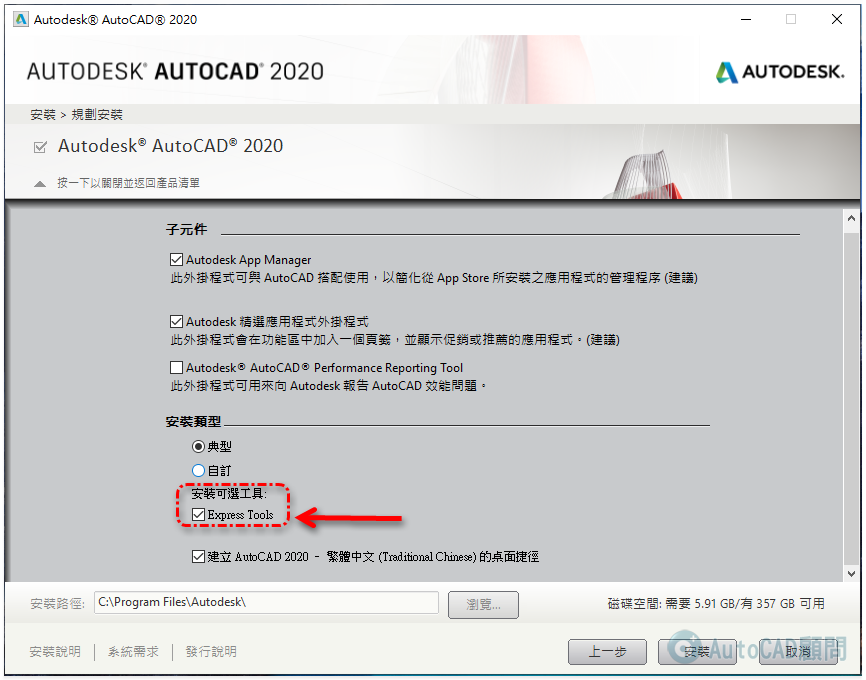
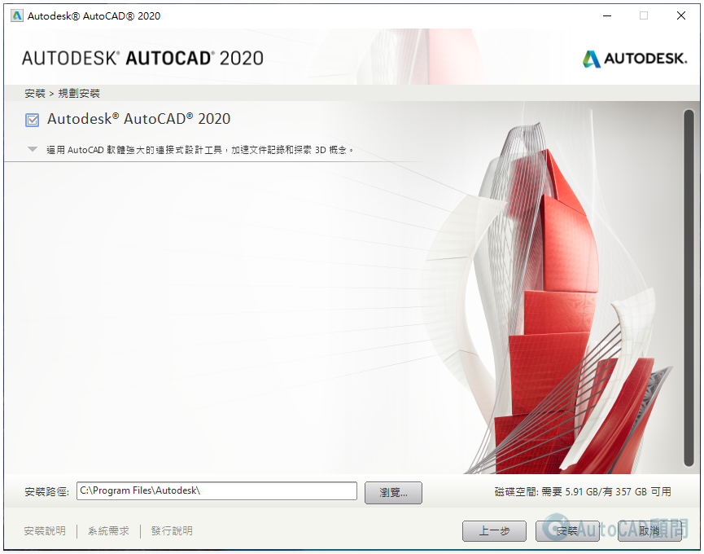
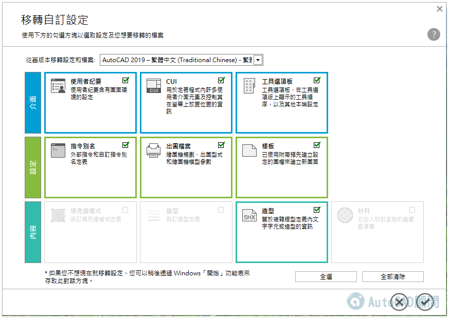
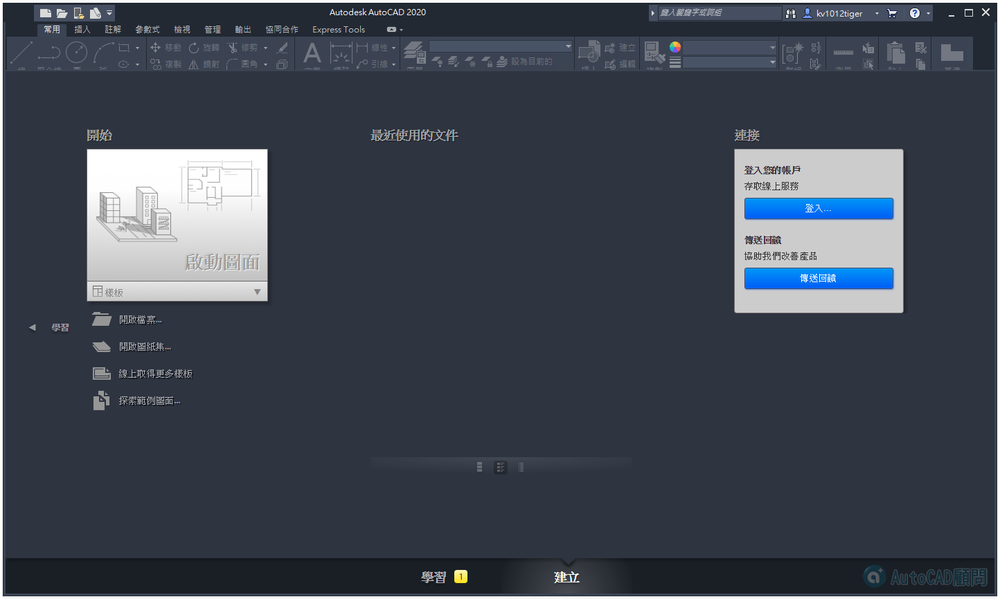
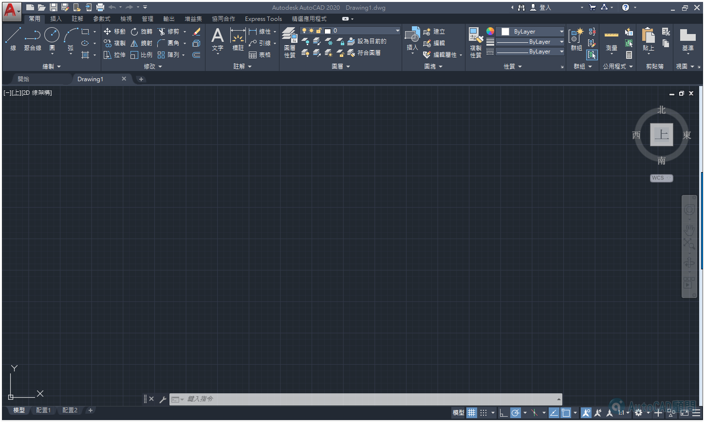

👑CAD繪圖準則預購準備中 ▶ https://goo.gl/VNVk3D ◀
AutoCAD 2020 啟用完成🎉
AutoCAD新版本您不一定要追著他！其實手邊AutoCAD版本夠用就好！
不過你必須知道AutoCAD新版本增加了什麼新功能，以後有機會可以用喔～
☺️歡迎一起研討新功能！
1、「安裝」→「在此電腦安裝」
2、「授權合約」→「我同意」→「下一步」
3、「規劃安裝」→「安裝」→「按一下開啟並規劃」→「安裝類型」→ 打勾「Express Tools」

4、「按一下關閉並返回產品清單」→「安裝」

5、「安裝進度開始」
6、「安裝中...」
7、安裝完成
8、AutoCAD 2020桌面捷徑
9、移轉自訂設定...(建議取消)

10、啟動AutoCAD 2020
11、AutoCAD 2020介面

12、「開始使用」
13、「隱私權聲明」
14、Autodesk授權「啟動」
15、「啟用」→「輸入序號」
16、「啟用完成」
17、AutoCAD 2020 初始畫面
